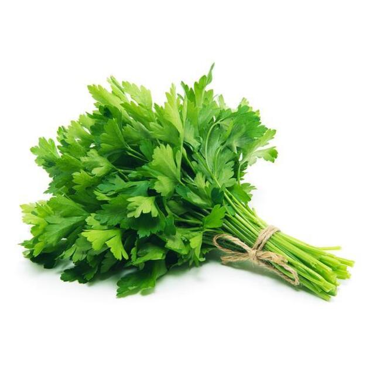

Orkaitėje keptos daržovės: šiltos ir spalvotos salotos ... Daržovės Rodoma 1–12 iš 17 Rūšiuoti pagal: Numatytasis rikiavimas Rikiuoti pagal populiarumą Rikiuoti nuo naujausių Rikiuoti pagal kainą (min → maks) Rikiuoti pagal kainą (maks → min)
Daržovės | Dėžėmis - vaisiai ir daržovės pigiau Daržovės – vienmečiai, dvimečiai ir daugiamečiai žoliniai augalai, kurių įvairios sultingos dalys vartojamos maistui. Mitybos prasme nuo daržovių skiriami vaisiai, kurie dažniausiai auga ant sumedėjusių augalų (medžių, krūmų, krūmokšnių) ir paprastai būna saldūs.
Daržovės, Daržovių patiekalai - Receptai | Patiekalai ORKAITĖJE KEPTOS DARŽOVĖS. 2 burokėliai, priklausomai nuo dydžio supjaustyti į keturias ar daugiau dalių 4 riekės moliūgo 4 morkos, perpjautos išilgai per pusę 2 pastarnokai, perpjauti ...
Daržovės - BARBORA Daržovės ir vaisiai Daržovės (8 5) 230 9309. Kasdien nuo 8 iki 21 val. El. p.: pagalba@barbora.lt. Daržovės ir vaisiai 215. Agurkai ir pomidorai 30; Paprikos ir baklažanai 14; Bulvės, morkos ir kopūstai 20; Svogūnai, porai ir česnakai 8 ...
Daržovės, vaisiai ir grybai | MAISTO PREKĖS | ShopTime.lt ... UAB Saldukas, amžina tradicija, visada pasiūlys įvairiausių prieskonių, prieskonių mišinių, prieskoninių žolelių, konditerijos žaliavų, džiovintų riešutų-vaisių ir daug kitų produktų iš Lietuvos ir viso pasaulio.
DARŽOVĖS - E-gulbelė Tel. +370 5 233 5340 info@auga.lt Nemokamas kokybės telefonas +370 800 11050 AUGA group, AB Konstitucijos pr. 21C, QUADRUM NORTH 08130 Vilnius
Daržovės – Skanaus! RECEPTAI, kurie įkvėps Jus gaminti! Čia jų rasite itin daug iš įvairiausių pasaulio šalių ir vietovių. Geri ir aiškiai aprašyti receptai, taip pat video receptai, kurie padės Jums pasigaminti ir ant stalo patiekti tik pačius skaniausius bei gardžiausius patiekalus! Geriausia vieta mėgstantiems gaminti.
Daržovės | Skelbimai | AgroLietuva.lt Daržovės – vienmečiai, dvimečiai ir daugiamečiai žoliniai augalai, kurių įvairios sultingos dalys vartojamos maistui. Mitybos prasme nuo daržovių skiriami vaisiai, kurie dažniausiai ...
daržovės - išsamiai DELFI.lt UAB Handelshus. Kodas: 221412030. PVM mokėtojo kodas: LT214120314. Naugarduko g. 102, 03160, Vilnius. Telefonas: +37068697707.
Page not found | Viskas apie sodininkystę ir sodo priežiūrą | Sodininku.info
2020.10.29 08:07

Namai Idėjos sodui Orų Prognozės Sodininkų TV Receptai Parduotuvė Prisijungti Sveiki! Prisijungti prie savo sąskaitos Jūsų vardas Jūsų slaptažodis Pamiršote slaptažodį? Slaptažodžio grąžinimas Atgauti savo slaptažodį jūsų e-paštas Prisijungti Sveiki atvykę! prisijunkite prie savo paskyros Jūsų vardas Jūsų slaptažodis Forgot your password? Get help Slaptažodžio grąžinimas Atgauti savo slaptažodį jūsų e-paštas Slaptažodis bus elektroniniu paštu Jums. Viskas apie sodininkystę ir sodo priežiūrą | Sodininku.info Namai Idėjos sodui Orų Prognozės Sodininkų TV Receptai Parduotuvė Oi ... Klaida 404 Atsiprašome, bet puslapio kurio ieškote, neegzistuoja. Jūs galite pereiti į PAGRINDINIS PUSLAPIS
MŪSŲ NAUJAUSIUS PRANEŠIMUS
Braškės
Braškių veislės
admin - 2020 18 gegužės 1 Vaismedžiai
Obelų veislės
admin - 2020 18 gegužės 0 Česnakai
Česnakai: nuo sodinimo iki auginimo
admin - 2020 14 sausio 0 Vyšnios
Pukuotosios vyšnios auginimas sode ir dauginimas
admin - 2019 20 gruodžio 5 Uogos
Vynuogių sodinimas, auginimas, dauginimas ir genėjimas
This website uses cookies to improve your experience while you navigate through the website. Out of these cookies, the cookies that are categorized as necessary are stored on your browser as they are essential for the working of basic functionalities of the website. We also use third-party cookies that help us analyze and understand how you use this website. These cookies will be stored in your browser only with your consent. You also have the option to opt-out of these cookies. But opting out of some of these cookies may have an effect on your browsing experience. Necessary Necessary Always Enabled
Necessary cookies are absolutely essential for the website to function properly. This category only includes cookies that ensures basic functionalities and security features of the website. These cookies do not store any personal information.
Non-necessary Non-necessary
Any cookies that may not be particularly necessary for the website to function and is used specifically to collect user personal data via analytics, ads, other embedded contents are termed as non-necessary cookies. It is mandatory to procure user consent prior to running these cookies on your website.